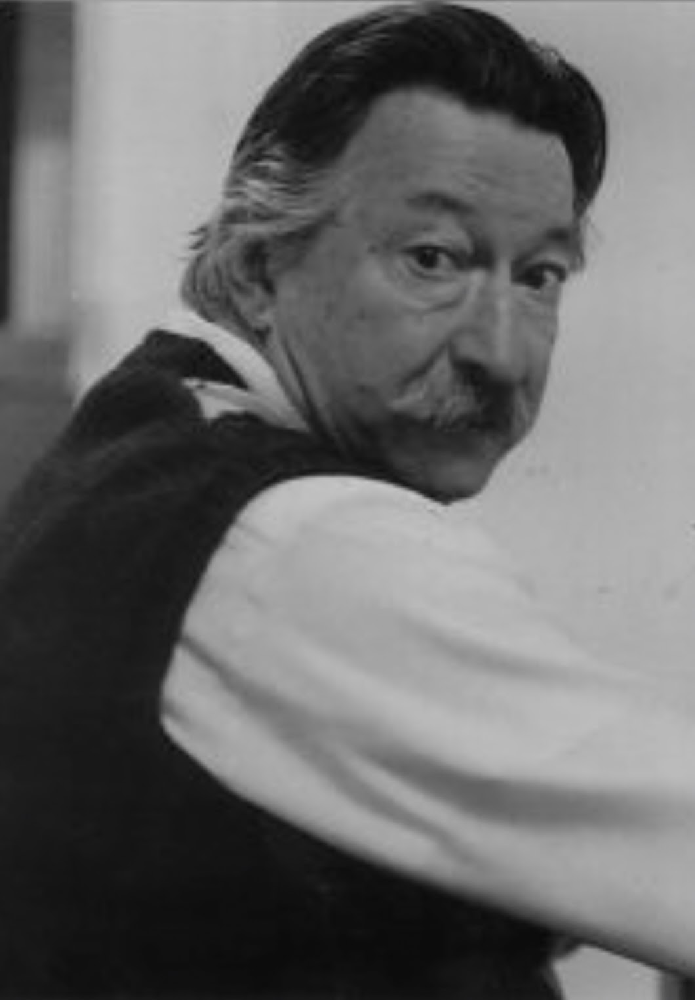

About the project

ELIZA is one of the most influential computer programs in history. Created by Joseph Weizenbaum at MIT in the mid-1960s, it was the world’s first chatbot: the first program to let people hold a conversation with a computer.
Its behaviour was controlled by scripts, of which DOCTOR is the most renowned, making ELIZA reply like a Rogerian psychotherapist: offering little of its own, instead asking leading questions. The program achieved remarkable cultural impact despite its modest size, about 420 lines of MAD-SLIP. Its descendants and echoes run from HAL 9000 to Siri and Alexa.
For decades after its 1966 publication in the Communications of the ACM, the original source code was unavailable. The team rediscovered the original ELIZA code in Weizenbaum’s archive at MIT in 2021, making it possible to investigate the history of the chatbot through authentic artifacts. This site, and the book Inventing ELIZA, are the result. Meet the people behind it on the TEAM-ELIZA page.